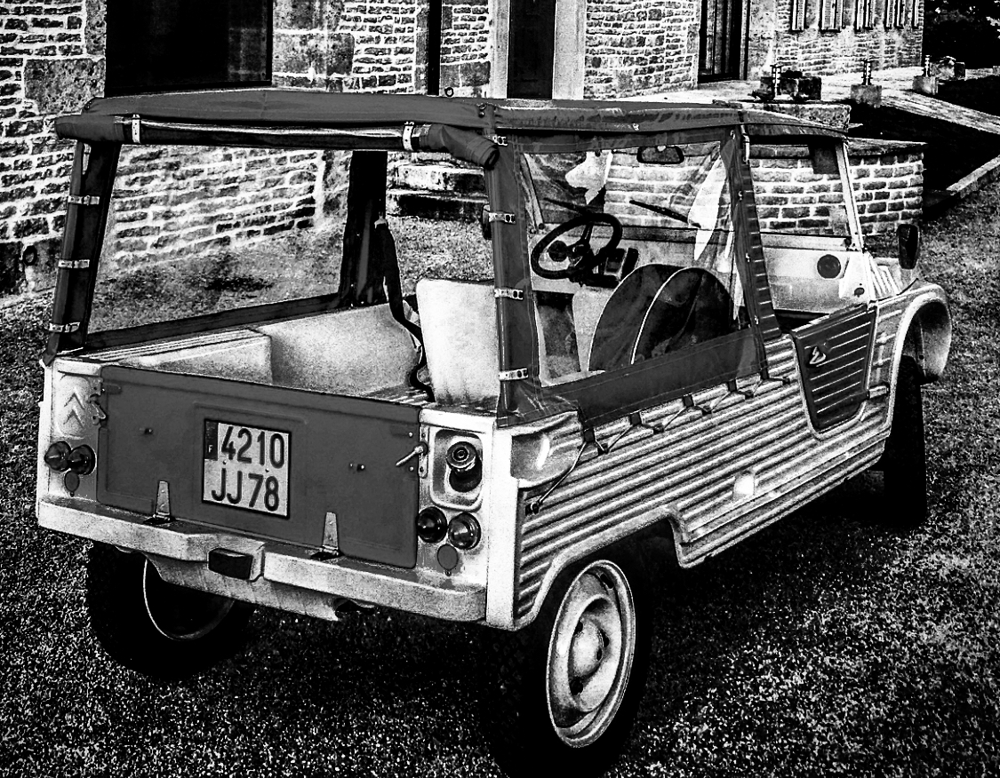
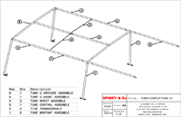

Section

La bâche qui équipe la Méhari
est soutenue par une armature
en Tube démontables.
Ces Tubes ont tendance à se perdre
pendant la vie de la voiture.
Vous trouverez donc dans cette section des plans pour refaire vous-même votre armature de bâche.
Tous les Tubes sont de diamètre extérieur 20mm et intérieur de 18mm, les emboitements sont de diamètre extérieur 17mm et 15mm pour intérieur.
Chaque tubes sont fixés entre eux par un system à bille identique à celui des armatures de tente de camping.
Différence avec l'origine :
- Les billes sur ressorts d'origine sont ici remplacées par un rivet pop installé sur une lamelle ressort (acier), ce system de bille à ressort peut aussi être récupéré sur les Tubes d'une tente de camping.
- Les rivets fixant les crochets rotatifs sur le Tube U arrière a été remplacé par une vis noyée dans un lamage et verrouillée par un écrou NILSTOP.
- Les axes d'embouts sont effectués à partir de clou de gros diamètre (ø6) coupés dans la longueur et cintrés.
Vous trouverez donc dans cette section des plans pour refaire vous-même votre armature de bâche.
Tous les Tubes sont de diamètre extérieur 20mm et intérieur de 18mm, les emboitements sont de diamètre extérieur 17mm et 15mm pour intérieur.
Chaque tubes sont fixés entre eux par un system à bille identique à celui des armatures de tente de camping.
Différence avec l'origine :
- Les billes sur ressorts d'origine sont ici remplacées par un rivet pop installé sur une lamelle ressort (acier), ce system de bille à ressort peut aussi être récupéré sur les Tubes d'une tente de camping.
- Les rivets fixant les crochets rotatifs sur le Tube U arrière a été remplacé par une vis noyée dans un lamage et verrouillée par un écrou NILSTOP.
- Les axes d'embouts sont effectués à partir de clou de gros diamètre (ø6) coupés dans la longueur et cintrés.

Pour vous aider, vous
pourrez trouver ICI
un fichier 3D ( IGES) que vous pouvez visionner avec un logiciel de CAO
3D ( CATIA, Pro I, SolidWorks…)